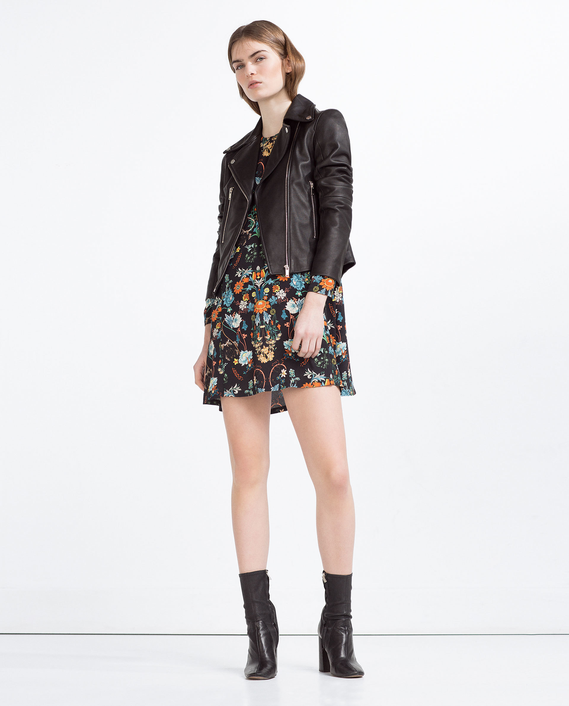
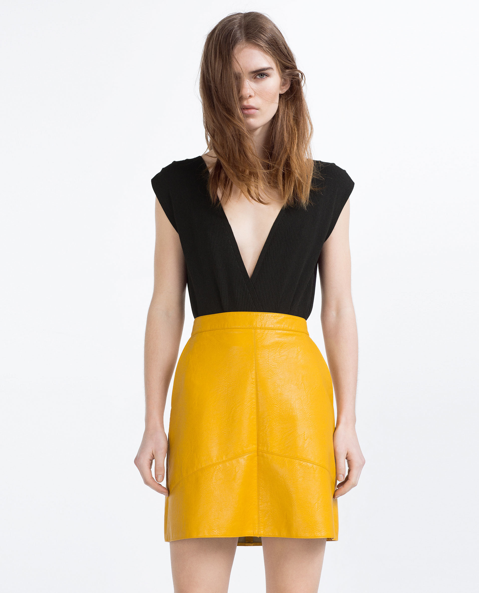
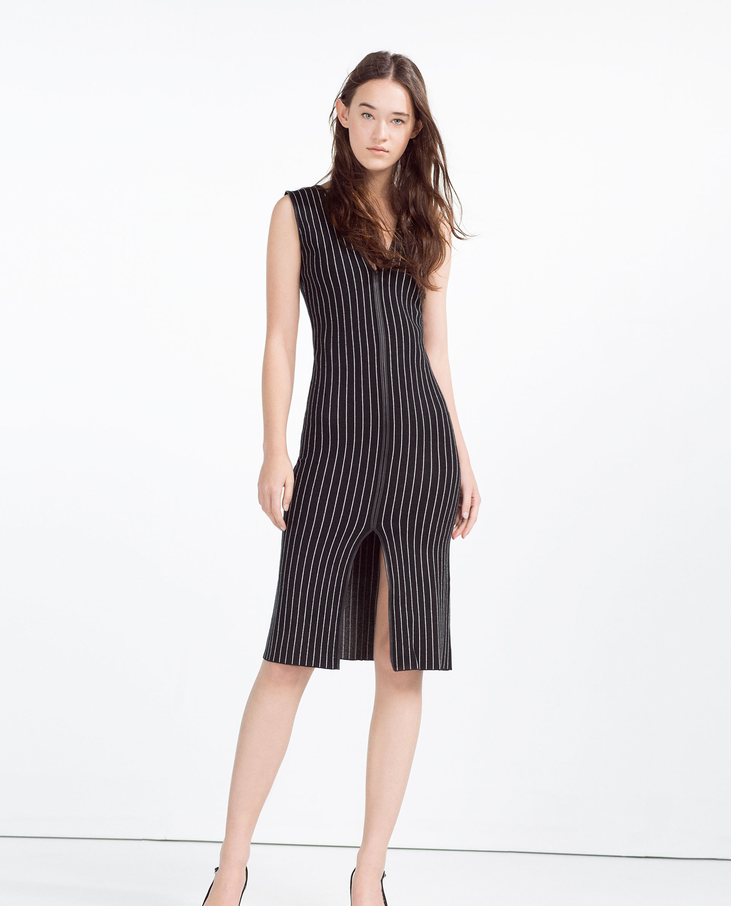

A Zara, una de nuestras firmas habituales preferidas, ya han llegado las nuevas propuestas de la colección Primavera-Verano 2016.La estrategia es clara: si entras para comprar a precios rebajados, acabas picando con una prenda de primavera. Un avance que se amplia cada semana y que ya ocupa buena parte de la tienda online y física, caracterizada por la invasión de las flores y el estilo setentero. ¿Estás lista para pensar en primavera?
Las flores se han convertido en las verdaderas protagonistas del primer avance de Zara. Ellas son las encargadas de vestir todo tipo de prendas. Las vemos en románticas blusas, delicados vestidos lenceros, pantalones... y las de colores más llamativos, aportan el toque perfecto al look desinhibido de la moda hippie y sementera.
El estilo setentero también se refleja en las faldas trapecio. Tres de mis modelos preferidos son los que aparecen en la imagen. El modelo patchwork
que combina grises y marrones, y los dos diseños realizado en polipiel, que sigue siendo uno de los tejidos perfectos para lucir en primavera, de hecho también podrás encontrar faldas de otros cortes y vestidos. Ideal la falda amarilla para las menos supersticiosas y preciosa la romántica azul Serenity, uno de los colores del año según Pantone.Una temporada más, las rayas se han hecho un sitio entre las tendencias destacadas. Para los próximos meses vamos a ver todo a rayas, especialmente los estilismos más serios y minimalistas para ir a trabajar. Sexys vestidos ajustados, pantalones culotte,blusas, faldas...todo lo vamos a ver a rayas, incluso cruzándose entre sí.
  